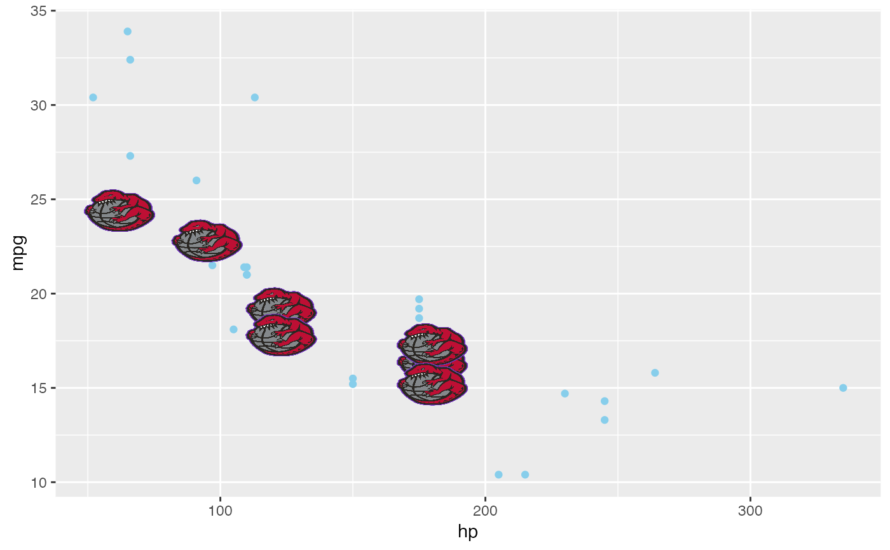

geom_image_glyph.RdEach point glyph can be an image (png, jpeg, etc) object.
geom_image_glyph(
mapping = NULL,
data = NULL,
stat = "identity",
position = "identity",
...,
images,
imagewidth = 1.2,
imageheight = 0.9,
interpolate = TRUE,
na.rm = FALSE,
show.legend = NA,
inherit.aes = TRUE
)Set of aesthetic mappings created by aes() or
aes_(). If specified and inherit.aes = TRUE (the
default), it is combined with the default mapping at the top level of the
plot. You must supply mapping if there is no plot mapping.
The data to be displayed in this layer. There are three options:
If NULL, the default, the data is inherited from the plot
data as specified in the call to ggplot().
A data.frame, or other object, will override the plot
data. All objects will be fortified to produce a data frame. See
fortify() for which variables will be created.
A function will be called with a single argument,
the plot data. The return value must be a data.frame, and
will be used as the layer data. A function can be created
from a formula (e.g. ~ head(.x, 10)).
The statistical transformation to use on the data for this layer, as a string.
Position adjustment, either as a string, or the result of a call to a position adjustment function.
Other arguments passed on to layer(). These are
often aesthetics, used to set an aesthetic to a fixed value, like
colour = "red" or size = 3. They may also be parameters
to the paired geom/stat.
a list of images (a raster object, bitmap image). If not provided, a point visual (geom_point()) will be displayed.
Numerical; width of image
Numerical; height of image
A logical value indicating whether to linearly interpolate the image (the alternative is to use nearest-neighbour interpolation,
which gives a more blocky result). See rasterGrob.
If FALSE, the default, missing values are removed with
a warning. If TRUE, missing values are silently removed.
logical. Should this layer be included in the legends?
NA, the default, includes if any aesthetics are mapped.
FALSE never includes, and TRUE always includes.
It can also be a named logical vector to finely select the aesthetics to
display.
If FALSE, overrides the default aesthetics,
rather than combining with them. This is most useful for helper functions
that define both data and aesthetics and shouldn't inherit behaviour from
the default plot specification, e.g. borders().
a geom layer
geom_..._glyph() understands the following aesthetics (required aesthetics are in bold):
x
y
alpha
colour
fill
group
size
linetype
shape
stroke
The size unit is cm
Note that the shape and stroke do not have real meanings unless the essential
argument images is missing. If so, a point visual will be displayed with
corresponding shape and stroke.
# \donttest{
# image glyph
if(require("png")) {
img_path <- list.files(file.path(find.package(package = 'ggmulti'),
"images"),
full.names = TRUE)
Raptors <- png::readPNG(img_path[2L])
Warriors <- png::readPNG(img_path[3L])
pg <- ggplot(data = data.frame(x = 1:2, y = rep(1, 2)),
mapping = aes(x = x, y = y)) +
geom_image_glyph(images = list(Raptors,
Warriors),
imagewidth = rep(1.2, 2),
imageheight = c(0.9, 1.2)) +
coord_cartesian(xlim = extendrange(c(1,2)))
pg
# query the images (a numerical array)
build <- ggplot2::ggplot_build(pg)
# `imageRaptors` and `imageWarriors` are three dimensional
# arrays (third dimension specifying the plane)
imageRaptors <- build$data[[1]]$images[[1]]
imageWarriors <- build$data[[1]]$images[[2]]
if(require("grid")) {
grid.newpage()
grid.raster(imageRaptors)
grid.newpage()
grid.raster(imageWarriors)
}
# THIS IS SLOW
mercLogo <- png::readPNG(img_path[1L])
p <- ggplot(mapping = aes(x = hp, y = mpg)) +
geom_point(
data = mtcars[!grepl("Merc", rownames(mtcars)), ],
color = "skyblue") +
geom_image_glyph(
data = mtcars[grepl("Merc", rownames(mtcars)), ],
images = mercLogo,
imagewidth = 1.5
)
p
}
#> Loading required package: png
#> Loading required package: grid

# }